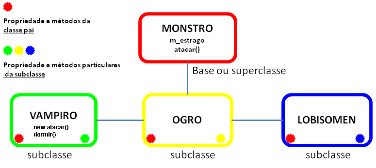
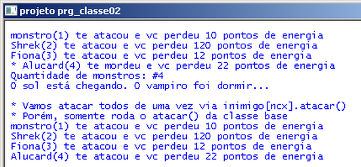

Gameprog - Escola de programação de jogos digitais
Contato: gameprog.br@gmail.com
Fase 06-2
| index | << | >> |
06-2 Classes derivadas
1. Visão geral  No C# você pode criar classes derivadas de apenas uma classe base. O diagrama acima ilustra as relações e as consequências resultantes de uma herança simples, isto é, uma subclasse que é derivada de apenas uma classe base e herda dela as propriedades e os métodos. No exemplo acima todas as subclasses ou classes filhas possuem automaticamente o método atacar() e a propriedade m_estrago definidas na classe base Monstro. O construtor de cada subclasse pode reconfigurar diferentemente as propriedades herdadas e pode redefinir os métodos para que eles tenham o comportamento particular condizente com a natureza da subclasse. Por exemplo, o 'vampiro' ataca de forma diferente dos outros monstros, por isso o seu método atacar() foi redefinido no projeto de exemplo. Se as propriedades não forem reconfiguradas e se os métodos não forem redefinidos, eles terão os valores e os comportamentos exatamente como foram definidos na classe base. Ao lado dos recursos herdados, a subclasse pode desenvolver individualmente propriedades e métodos exclusivos a ela. Por exemplo, o 'vampiro' do nosso exemplo tem um método dormir() exclusivo. Veja nosso exemplo:  Em nosso programa, que emite a saída acima, definimos uma classe Monstro ( a classe base) e derivamos duas subclasses dela: Ogro e Vampiro. As duas subclasses herdam a propriedade m_estrago e o método atacar() da classe base. Implementamos na subclasse Vampiro o método exclusivo dormir(). Dentro da classe Vampiro o método atacar() foi redefinido para acomodar as particularidades do objeto dessa subclasse. Para fazer isso a palavra-chave new foi adicionada na assinatura do método para indicar que o método de mesmo nome da classe base deve ser escondido e que o novo método deve prevalescer.
2. Sintaxe de derivação class Ogro: Monstro { // código da classe }; Esta é a sintaxe de derivação de classes, depois do nome da subclasse é colocado dois pontos ( : ) e o nome da classe base (Monstro). Diferente do C++, não há tipos de herança em C#. Desta forma, apenas os membros assinalados como public ou protected são herdados pela subclasse. Portanto, na linguagem C# isso não existe:class Ogro: public Monstro { // código da classe }; class Ogro: private Monstro { // código da classe };Vamos lembrar que os membros qualificados como public podem ser acessados em qualquer parte do programa. Membros private podem ser acessados apenas de dentro da classe aonde foram definidos. E os membros protegidos, qualificados como protected são herdados porém são de uso interno da subclasse não se extravazando para o acesso de classes clientes.
Chamando o construtor da classe base Ogro(): Monstro(120) {} // Monstro a = new Mostro() Ogro(estrago): Monstro(estrago) {} // Monstro a = Monstro(99) Na assinatura do construtor da subclasse você pode chamar o contrutor da classe base e passar variáveis para lá serem inicializadas. Nestes exemplos, os valores passados configuram o atributo m_estrago dentro da classe base nos respectivos contrutores que foram sobrecarregados.
Redefinindo métodos na subclasse // new indica que o método da classe base será escondido! // O Vampiro morde no ataque! new public void atacar() { string msg = ""; msg = " * {0}({1}) te mordeu e vc perdeu {2} pontos de energia"; Console.WriteLine(msg, m_nome, m_id, m_estrago); } // atacar().fim A instrução new é necessária para redefinir particularmente os métodos existentes na classe base. Aqui o método atacar() foi redefinido na subclasse Vampiro; caso não tivesse sido, ele rodaria exatamente como foi definido na classe Monstro. Mas essa abordagem tem um problema: quando você chama o método atacar() a partir de uma array, o que roda é o método da classe base. Este problema é solucionado com métodos virtuais.
Introdução a classes virtuais A criação de array de objetos torna muito prático e confortável a manipulação de muitos objetos. Por exemplo, utilizando as classes acima definidas poderíamos criar uma lista de 100 vampiros e uma lista de 100 ogros e fazê-los atacar de uma só vez. Vampiro[] lista_vampiros = new Vampiros[100]; Ogro[] lista_ogro = new Ogro[100]; for (int ncx = 0; ncx < 100; ncx++) { lista_ogro[ncx].atacar(); lista_vampiros[ncx].atacar(); } // endfor No bloco acima criamos separadamente uma lista de ogros e vampiros. Sabemos que essas duas classes são derivadas da classe base Monstro. Se você tivesse 100 tipos de montros, aquele bloco de código acima ficaria imenso. A sintaxe de classe virtual permite que você aliste numa array de monstros vampiros e ogros e outros tipos de monstros que vc definir. Em palavras mais técnicas, você consegue referenciar numa array de objetos da classe base todos os tipos de objetos das subclasses. Quando você chamar o método atacar() dessa lista de objetos Monstros, se esse objeto for um vampiro ele atacará do jeito particular de vampiro, se for um ogro atacará do jeito ogro de ser e tudo isso você conseguirá fazer em poucas linhas dentro de um loop for ou while. Nosso programa exemplo apresenta um resultado indesejável de uma situação que necessitaria o uso de classes virtuais para ser corrigida: Os ogros e vampiros definidos executam o método genérico atacar() da classe base quando colocados em uma array:// Vamos criar uma array de monstros! Monstro[] inimigo = new Monstro[5]; inimigo[1] = godzila; inimigo[2] = shrek; inimigo[3] = fiona; inimigo[4] = alucard; Console.Write("\n"); Console.Write(" * Vamos atacar todos de uma vez via inimigo[ncx].atacar()\n"); Console.WriteLine(" * Porém, somente roda o atacar() da classe base"); for (int ncx = 1; ncx <= 4; ncx++) inimigo[ncx].atacar();Esse bloco de código está plenamente correto. Ele não produz o resultado correto porque a classe não está definida como virtual. Vamos ver como corrigir essa situação no próximo capítulo.
3. Membros estáticos private static int nobj = 0; Com muita frequência vai haver a necessidade de realizarmos a contagem ou o controle de criação de objetos. Essa contagem é feita através do uso de membros estáticos que podem ser definidos na sintaxe mostrada no código acima. Esse membro vai ser uma propriedade única da classe e não vai se tornar particular de nenhum objeto. O acesso deve ser feito utilizando o nome da classe: nqtd = Monstro.nobj // acesso se fosse público... nqtd = Monstro.get_qtd() // acesso por um método público Você também pode definir a propriedade estática como private e assim para prover acesso a ela você deve definir funções de acesso. Estas funções também podem ser definidas como static e assim elas serão únicas para a classe tal como os atributos definidos dessa forma. // Retorna a quantidade de monstros criados public static int get_qtd() { int nqtd = 0; nqtd = nobj - 1; return nqtd; }
4. Código fonte do projeto prj_classe02// Projeto prj_classe02 - Arquivo:Monstro.cs // Ilustra herança simples, redefinição de métodos (new) // Membros estáticos; chamando o construtor da classe base using System; namespace prj_classe02 { class Monstro { // atributos public int m_estrago; // capacidade de fazer estrago public int m_id; // identificador do objeto public string m_nome; // nome do objeto private static int nobj = 1; // contador de objetos // Construtor 01 Mostro() public Monstro() { m_estrago = 10; m_nome = "monstro"; m_id = nobj; nobj++; } // fim do Construtor 01 // Construtor 02 Monstro (int nval) public Monstro(int estrago) { m_estrago = estrago; m_nome = "monstro"; m_id = nobj; nobj++; } // fim do construtor 02 // atacar() public void atacar() { string msg = ""; msg = " {0}({1}) te atacou e vc perdeu {2} pontos de energia"; Console.WriteLine(msg, m_nome, m_id, m_estrago); } // atacar().fim // Retorna a quantidade de monstros criados public static int get_qtd() { int nqtd = 0; nqtd = nobj - 1; return nqtd; } // get_qtd().fim } // fim da classe } // fim do namespace
// Projeto prj_classe02 - Arquivo: Ogro.cs // Ilustra herança simples, redefinição de métodos (new) // Membros estáticos; chamando o construtor da classe base using System; namespace prj_classe02 { class Ogro: Monstro { // Construtor chama construtor da classe base public Ogro() : base(120) { } // Repassa valor para construtor da classe base public Ogro(int estrago): base(estrago) { } } }// Projeto prj_classe02 - Arquivo: Vampiro.cs // Ilustra herança simples, redefinição de métodos (new) // Membros estáticos; chamando o construtor da classe base using System; namespace prj_classe02 { class Vampiro: Monstro { // Construtor chama construtor da classe base public Vampiro() : base(22) { } // Repassa valor para construtor da classe base public Vampiro(int estrago): base(estrago) { } // Método particular do vampiro public void dormir() { Console.WriteLine(" O sol está chegando. O vampiro foi dormir..."); } // dormir(0.fom // new indica que o método da classe base será escondido! // O Vampiro morde no ataque! new public void atacar() { string msg = ""; msg = " * {0}({1}) te mordeu e vc perdeu {2} pontos de energia"; Console.WriteLine(msg, m_nome, m_id, m_estrago); } // atacar().fim } // fim da classe } // fim do namespace// Projeto prj_classe02 - Arquivo: Program.cs // Ilustra herança simples, redefinição de métodos (new) // Membros estáticos; chamando o construtor da classe base using System; namespace prj_classe02 { class Program { static void Main(string[] args) { config_janela("projeto prg_classe02"); // Vamos criar uma quadrilha de monstros Monstro godzila = new Monstro(); Ogro shrek = new Ogro(); Ogro fiona = new Ogro(12); Vampiro alucard = new Vampiro(); // Vamos configurar os nomes exceto godzila shrek.m_nome = "Shrek"; fiona.m_nome = "Fiona"; alucard.m_nome = "Alucard"; // Vamos atacar godzila.atacar(); shrek.atacar(); fiona.atacar(); alucard.atacar(); Console.WriteLine(" Quantidade de monstros: #{0}", Monstro.get_qtd()); alucard.dormir(); // Vamos criar uma array de monstros! Monstro[] inimigo = new Monstro[5]; inimigo[1] = godzila; inimigo[2] = shrek; inimigo[3] = fiona; inimigo[4] = alucard; Console.Write("\n"); Console.Write(" * Vamos atacar todos de uma vez via inimigo[ncx].atacar()\n"); Console.WriteLine(" * Porém, somente roda o atacar() da classe base"); for (int ncx = 1; ncx <= 4; ncx++) inimigo[ncx].atacar(); Console.ReadKey(); } // Main().fim // Método para configurar a janela static void config_janela(String titulo) { // Vamos configurar a janela Console.ForegroundColor = ConsoleColor.Blue; Console.BackgroundColor = ConsoleColor.White; Console.Title = titulo; Console.SetBufferSize(80, 30); Console.SetWindowSize(80, 30); Console.Clear(); Console.Write("\n"); } // config_janela() fim } // fim da classe } // fim do namespace
4. sealed - Negando a herança Com a instrução sealed é declarado que a classe não pode ser herdada e que portanto não se deixará atuar como uma classe base. Faça o teste desta palavra-chave utilizando o projeto de exemplo deste capítulo. Altere a declaração da classe Monstro para esta forma: sealed class Monstro Isto vai coibir a herança e na compilação do projeto vai ocorrer uma mensagem avisando que as demais classes não podem herdar da classe Monstro em questão.
| index | << | >> |
Produzido por Gameprog: Jair Pereira - Março/2014 © gameprog.br@gmail.com http://www.gameprog.com.br